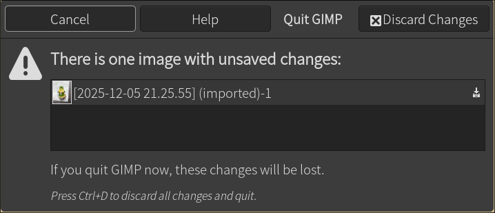

软件心得和推荐
系统工具
大部分是命令行工具。
- tree: 树状文件浏览，辅助ls
- less: 预览文件。arch linux连这个都不预装是我没想到的。。
- auto-cpufreq: 据说是省电小助手
sudo pacman -S auto-cpufreq
systemctl enable auto-cpufreq
systemctl start auto-cpufreq
- rsync ：同步文件夹。适合写脚本。
- yazi：鸭子。终端模式的文件管理器，需要一点上手，但我很喜欢它的标记
再操作功能，防止手滑。
- 空格：选取文件
- shift+enter：选择打开方式
- y：复制，p：粘贴，x：剪切
- t：增加新tab
[,]，切换tab。- a：添加文件。如果输入名字后加一个
/，就改为创建文件夹。 - r：改名
- d：删除
- ctrl+c：关闭tab，如果只剩下一个tab，就退出程序
- kwin：kde自带的窗口平铺管理器，适合想用一些平铺，又不愿意放弃kde全 家桶的人。
- findimagedupes：寻找相似的图片。
findimagedupes -R -- . > dups.log。 注意是相似，不一定相同，不要依赖它来删除同样的图片。 - yt-dlp：下载youtube视频到本地的命令行工具。
- cmus：极简风格的音乐播放器。由于MOC装不上，就换成了cmus，体验良好
- evince：看pdf
文档编辑器
作为文档编辑器爱好者，我项目管理靠用不同的编辑器，一个编辑器管一块业务。
- nano: 对于不喜欢vim的人来说，这个在终端用很合适，我只要有terminal就 会配置一个。用了n年后我才发现支持语法高亮，一直都黑白配裸奔。
- emacs: 这几年emacs热度骤降，市场份额比vim低一个数量级，但org mode还 是香。不想折腾的可以参考我的配置。
- code: VS code的linux版
- neovim/lazyvim。我很遗憾当初因为圣战而没有入坑，现在年纪大了再学一 套快捷键体系很难。相见恨晚，完全可以取代IDE，对于老人程序猿来说， vim恐怕是最友好的，不需要鼠标，而且几乎整个屏幕都是编辑界面，适合老 人大字体。
- atom：快要被zed迭代了（同一公司），但是我喜欢它的简洁风格。
- zed(zeditor)：有了它之后我就再也不用vs code了。开箱即用的功能有：开 终端，git整合，直接看到上次commit，语法检查，显示method的定义和注释。 它不多不少正好有我需要的东西，没有我不需要的。唯一遗憾的是目前没找 到透明背景怎么搞。
- mousepad：xfce的记事本，够简单，我当便签使用。
终端
- tilix: 可以平铺窗口的终端。（某次被arch滚挂了，不知道跟wayland有没 有关系）
- kitty：当红轻量级、可定制终端，支持透明
- konsole：kde默认终端，我用它作为默认终端来跑终端模式的程序。分屏很 方便。
其它
- darktable：照片编辑和管理。据说用过之后就不想用lightroom了
- RawTherapee：也是照片编辑和管理，各有优点。
- krita：替代photoshop。
- gimp：虽然我不习惯它的快捷键，还是要赞一下终于把反人类的每个部件单 独一个窗口改掉了，变成整合的了。快捷键吐槽：谁家软件用ctrl+D来退出 并且没有鼠标点击的选项 
- imagemagick；一系列处理图片的命令行。虽然听着反直觉，但是有些小东西
还挺方便，比如terminal直接看图
display a.jpg。批量给图片加边框也很 方便。 - brave：浏览器。用起来很舒服，内存耗的可以接受。
- GeoGebra：最好的几何作图软件。